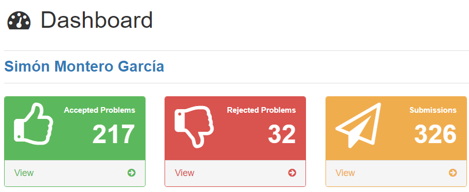
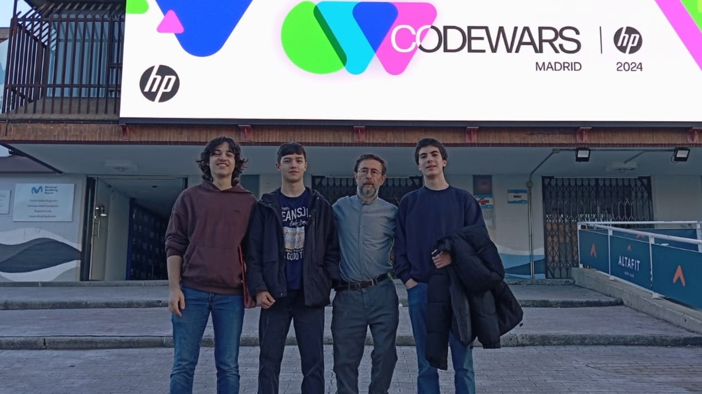
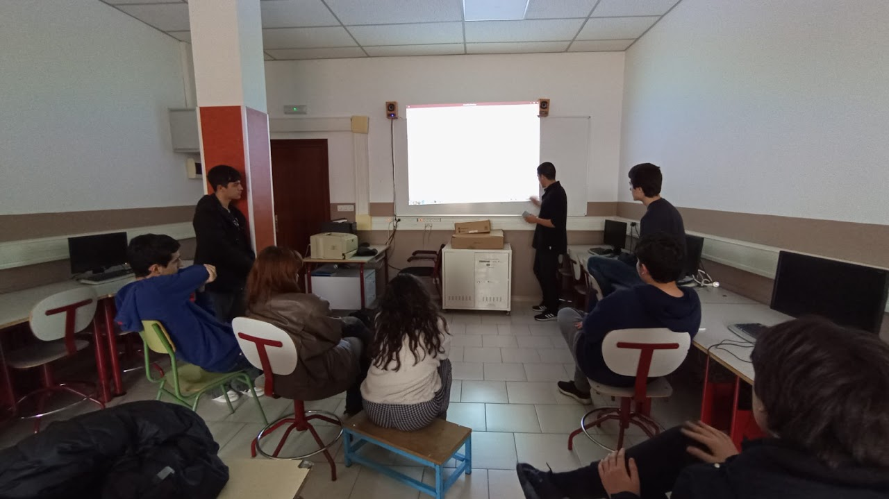
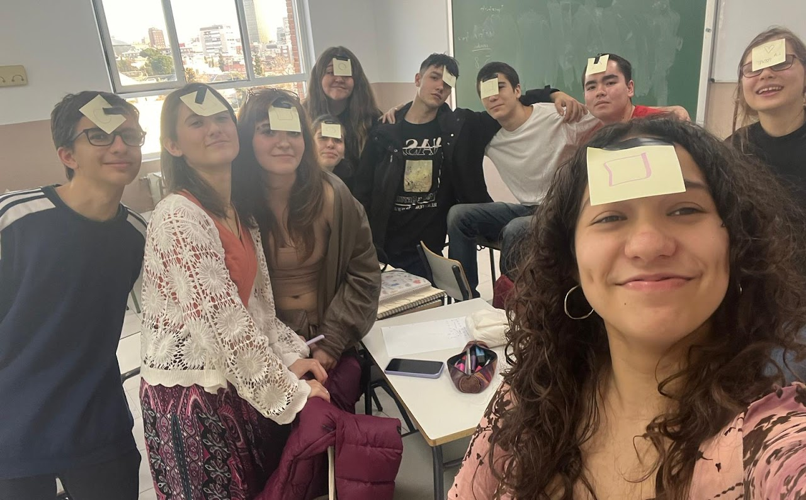
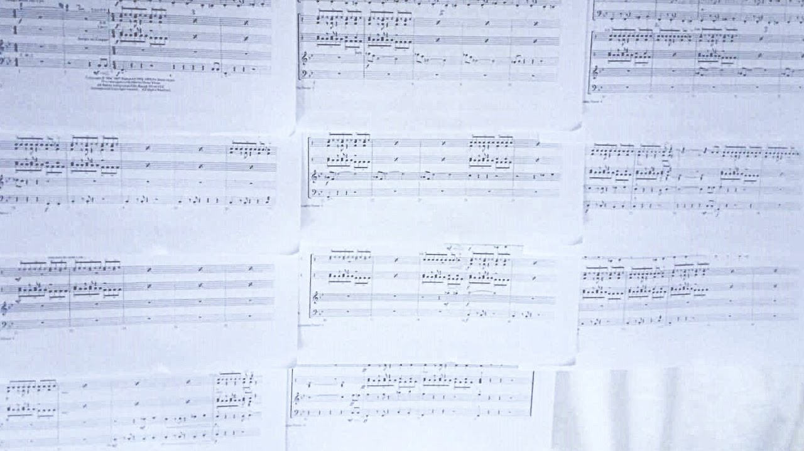
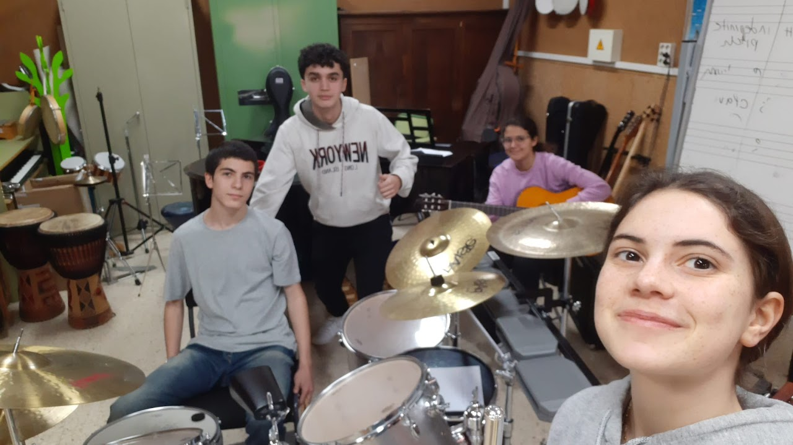

ProgramaciónDesde los once años he estado programando en diferentes lenguajes y lo disfruto mucho, tanto resolver problemas online como crear mis propios proyectos. Ahora mismo me dedico a tres actividades de programación: doy clases de Python a otros estudiantes en un taller llamado Sui Generis, resuelvo problemas en jutge.com, y programo mis propios proyectos. He desarrollado algoritmos y páginas web como esta, pero casi siempre programo juegos. Para mi monografía, que hice de la asignatura de informátics, programé uno de mis proyectos más grandes hasta ahora, una red neuronal capaz de aprender a jugar Snake. |
|---|
 Mi perfil de Jutge, la web que más uso para practicar problemas. |
 Antes del concurso Code Wars, la primera vez que fuimos en 2024. Quedamos octavos, y en 2025 hemos quedado cuartos. |
|---|---|
 La clase de Sui Generis, que impartimos los lunes de 4 a 5:30. |
Grabación de la red neuronal jugando Snake. |
Seminario dde MatemáticasTambién llevo con compañeros un seminario de matemáticas, del que organizamos sesiones semanales. Solemos ver problemas y contenidos de matemáticas a nivel universitario, resolviendo problemas que preparamos los coordinadores, además de algunos de olimpiadas matemáticas y otros recursos online. |
||||||||||||||||||||
|---|---|---|---|---|---|---|---|---|---|---|---|---|---|---|---|---|---|---|---|---|
Arriba están algunos de los seminarios que he preparado, concretamente mi primer seminario, mi tercero y mi quinto y uno de mis finales. He ido mejorando en mi capacidad de describir problemas más concisos y dinámicos, y redactar enunciados entretendidos pero sencillos de comprender. Redactar las hojas de problemas colctivamente nos ha permitido preparar sesiones incluso en semanas donde teníamos que estudiar pera exámens, y he puesto a prueba nuestras habilidades como coordinadores de aunar nuestros esfuerzos de manera efectiva. |
 En una de las sesiones. |
|||||||||||||||||||
Conjunto Instrumental Llevo tocando la batería desde los 7 años, practicando y yendo a clases todas las semanas. Al empezar el bachillerato dejé las clases porque quería dejar de estudiar teoría y centrarme en aprender ritmos de canciones y componer los míos propios. He estado ocupado con los estudios y no he podido tocar o componer tanto como me gustaría, pero sí he participado en un conjunto instrumental de mi instituto. |
||||||||||||||||||||
|---|---|---|---|---|---|---|---|---|---|---|---|---|---|---|---|---|---|---|---|---|
 Mis partituras para el tema principal de Misión imposible. |
 Algunos de los integrantes del conjunto. |
|||||||||||||||||||